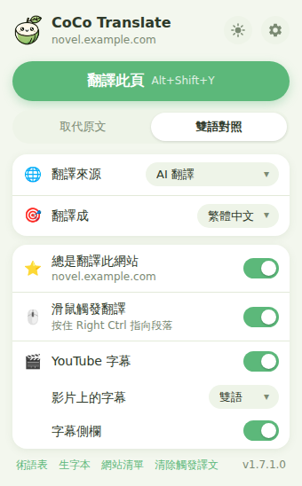
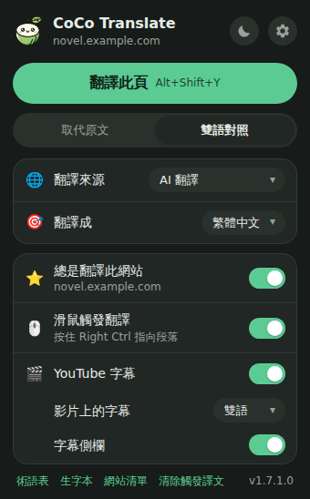
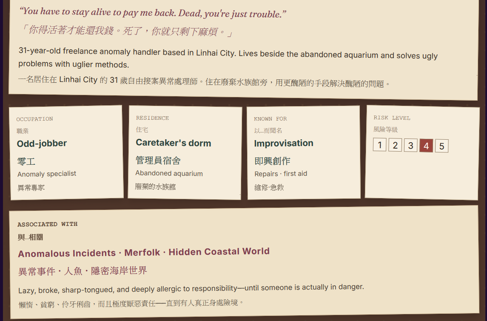
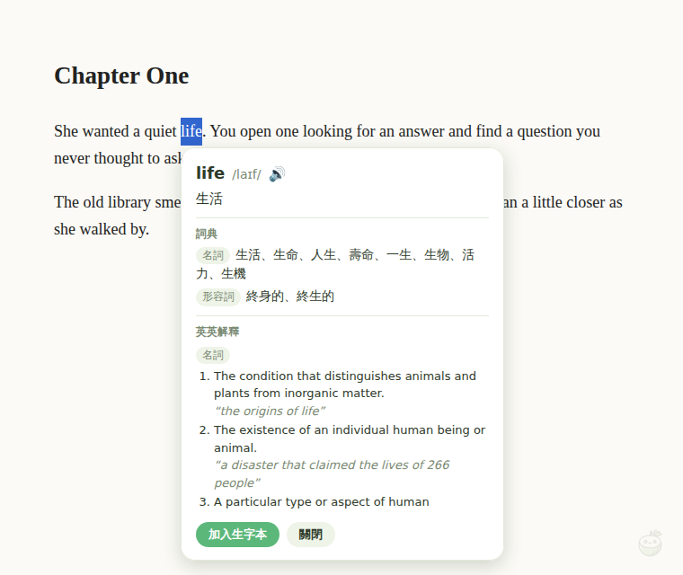
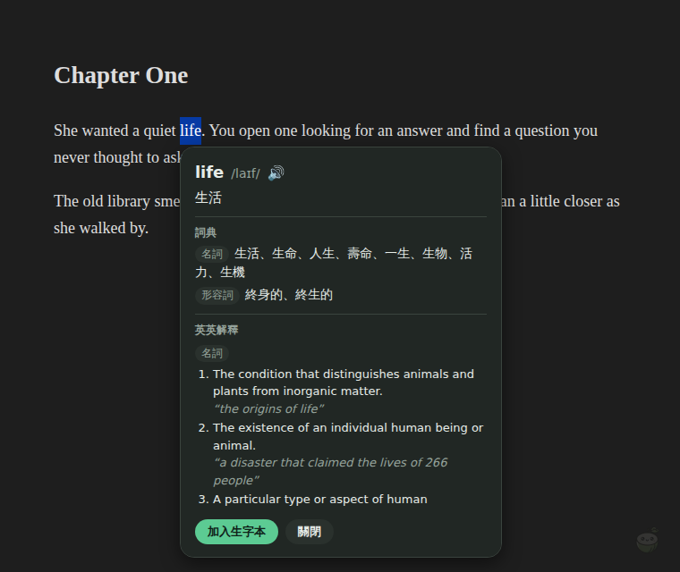
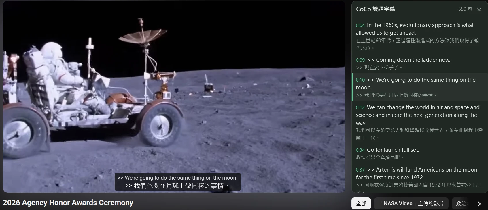
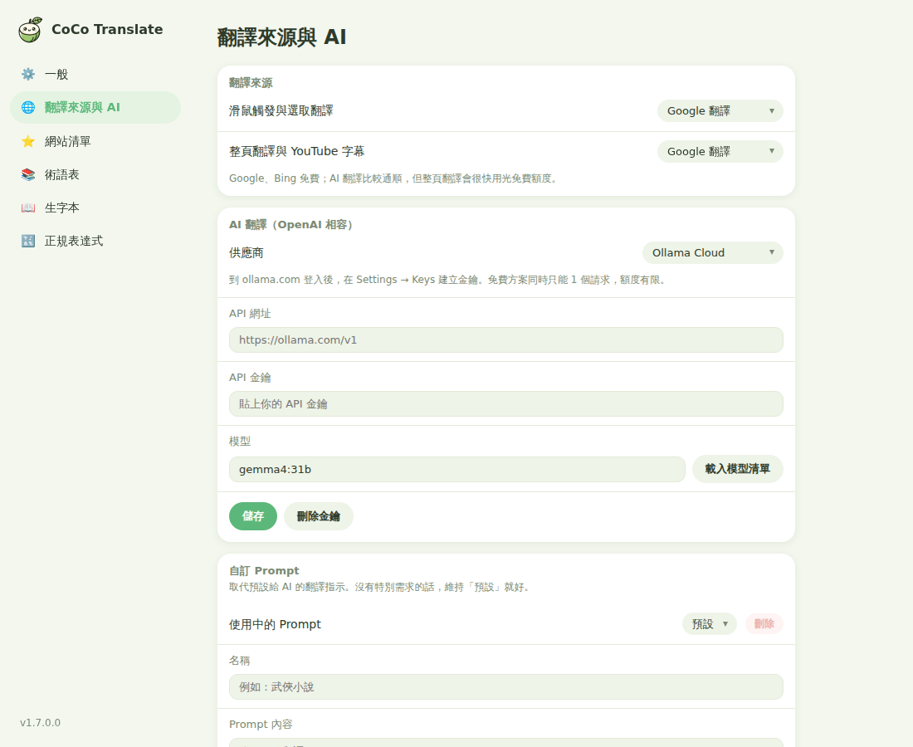
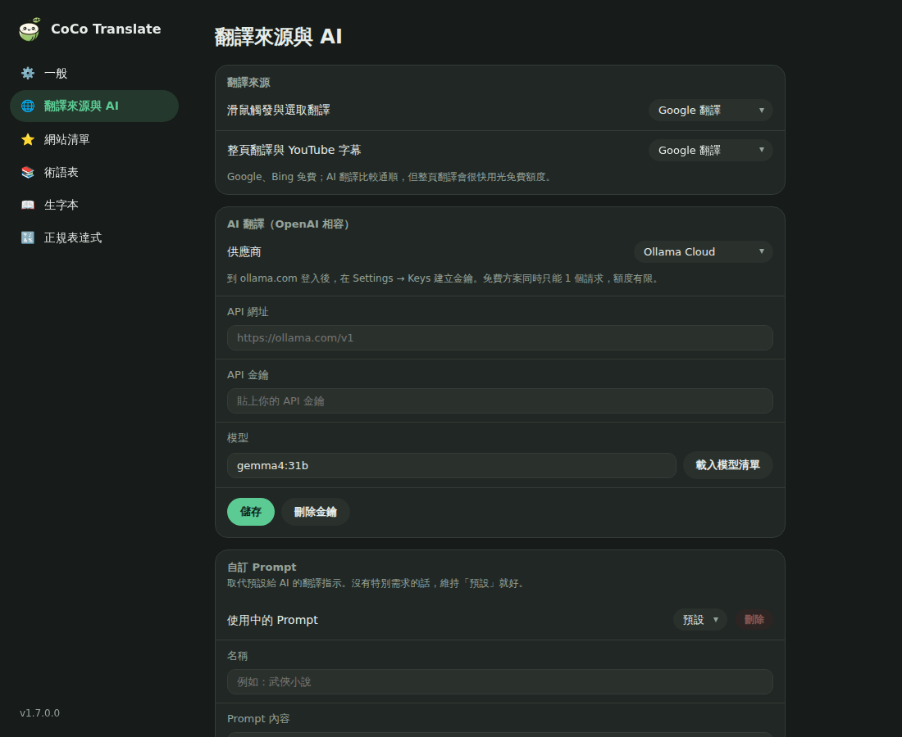

1.7.1.12026/9/26
- 官網搬到 GitHub Pages，舊的說明文件停用。
- 修正：YouTube 字幕的「>>」（換人講話）和「[applause]」這類音效標記不會再黏在句子裡。
- 修正：雙語對照時，譯文和原文一樣（例如人名）不會重複顯示。
Chrome ・ Firefox 瀏覽器擴充功能
“Let’s read one more chapter before bed,” she said.
「睡前再看一章吧。」她說。
CoCo Translate 把譯文放在原文旁邊：整頁雙語對照、滑鼠一指就翻、查單字記生字、YouTube 整句雙語字幕。Google、Bing 免費就能用，也能接上你自己的 AI。
版本 1.7.1.1開放原始碼設定與金鑰只存在你的瀏覽器


機器翻譯難免漏翻或翻錯，所以 CoCo 預設讓原文和譯文放在一起，一邊讀一邊對照。
每一段原文下面接著譯文，段落裡的粗體、連結都保留。也可以切換成直接取代原文。

選取文字會出現小工具列，可以翻譯、查字典、朗讀。單字卡依詞性列出多個意思，還有英英解釋和例句。


讀取整份字幕檔，把逐字冒出來的字幕合成完整的句子，先整批翻好，播放時一次顯示一整句。

滑鼠觸發和整頁翻譯可以分開選來源。整頁用免費的 Google，查句子用 AI，額度花在刀口上。


目前沒有上架商店，從 GitHub 下載安裝檔。更新時照同樣步驟再裝一次，設定會保留下來。
彈出視窗放常用功能，細項都在設定頁。所有設定改了就存，不用按儲存。
快捷鍵用瀏覽器內建的設定，可以改成別的組合，也可以清空停用，避免和其他擴充衝突。到設定頁「一般 → 整頁翻譯 → 快捷鍵」按「修改」。
| 動作 | Windows／Linux | macOS |
|---|---|---|
| 翻譯此頁 ⇄ 顯示原文 | Alt + Shift + Y | Control + Shift + Y |
| 切換取代原文 ⇄ 雙語對照 | 預設沒有，可以自己設定 | |
| 滑鼠觸發翻譯 | 按住 右 Ctrl 指向段落（觸發鍵可在設定頁更換） | |
建議整頁翻譯用 Google 或 Bing，AI 留給需要通順語感的地方，免費額度才撐得久。
| 來源 | 需要什麼 | 說明 |
|---|---|---|
| Google 翻譯 | 免金鑰 | 預設的來源，速度快，適合整頁翻譯和字幕。 |
| Bing 翻譯 | 免金鑰 | Google 的備案，偶爾會失敗，重試即可。 |
| Google Cloud Translation | API 金鑰 | 官方 API，支援本地快取。 |
| DeepL API | API 金鑰 | 有免費方案，金鑰結尾是 :fx 會自動用免費版網址。 |
| Ollama Cloud | API 金鑰 | 到 ollama.com 建立金鑰，免費方案一次一個請求。預設模型 gemma4:31b。 |
| OpenRouter | API 金鑰 | 名稱結尾是 :free 的模型免費，每天 50 次。 |
| Google Gemini | API 金鑰 | 到 aistudio.google.com 建立，Flash-Lite 系列有免費額度。 |
| Groq | API 金鑰 | 免費但每分鐘 token 少，不適合整頁翻譯。 |
| 本機 Ollama | 免金鑰 | 在自己電腦上跑模型，沒有額度限制。 |
| 自訂 | 看服務 | 任何 OpenAI 相容的 API，例如 LM Studio。 |
影片的 CC 要開著，YouTube 開 CC 時才會下載字幕檔。影片上選了「不顯示」的話，CC 開著畫面上也不會有字幕，看右邊的字幕側欄就好。讀不到字幕檔時會改成翻譯畫面上正在顯示的 CC。
金鑰只存在你的瀏覽器裡，翻譯時直接送到你選的翻譯服務，沒有經過其他伺服器。AI 翻譯的金鑰是每個供應商各存一份，切換供應商不會互相覆蓋。
翻成繁體中文和日文時，""、“” 和全形＂會自動換成「」，引號裡的引號換成『』。英文和韓文不換。
多個中文意思來自 Google 翻譯的字典資料，英英解釋和例句來自 Free Dictionary（資料來源是維基詞典，只有英文）。最上面那行譯文，則是用「滑鼠觸發與選取翻譯」的翻譯來源翻出來的。
整頁翻譯一次會送出很多段文字。建議整頁翻譯用 Google 或 Bing，AI 留給滑鼠觸發翻譯；或改用本機 Ollama，沒有額度限制。
到設定頁「一般 → 整頁翻譯 → 快捷鍵」按「修改」，會打開瀏覽器的快捷鍵設定，可以換成別的組合，或清空停用。
設定頁「一般 → 進階」，按「清除快取」。只有打開「把譯文存在電腦上」時才會存。
因為 CoCo 一次翻一整段，上下文才對得上。只想查一個字的話，選取後按工具列的 📖 開單字卡。
從 1.5 開始整個重寫，下面是每一版改了什麼。
1.7.1.12026/9/26
1.7.1.02026/9/26
1.7.0.02026/9/26
1.6.1.02026/9/25
1.6.0.02026/9/25
1.5.0.02026/9/25
2025/7/13
2025/3/25
2025/3/19
2025/2/26
2025/2/23
2025/2/21
2025/2/6
2025/2/2
2025/1/11
2025/1/9